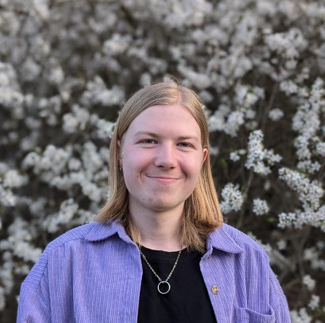
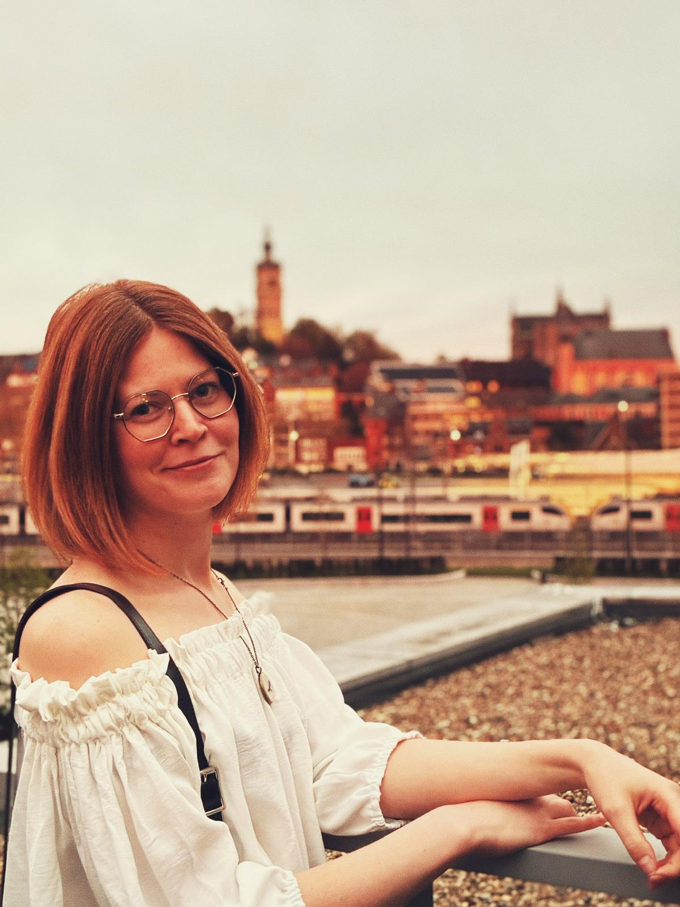
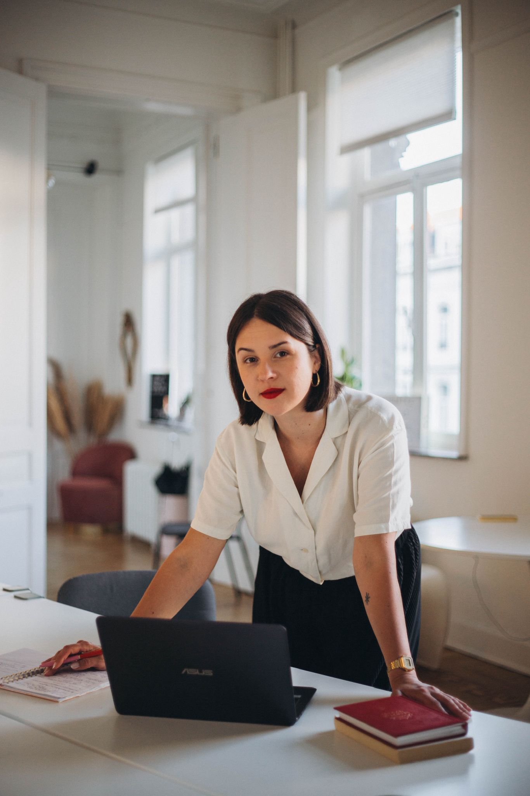
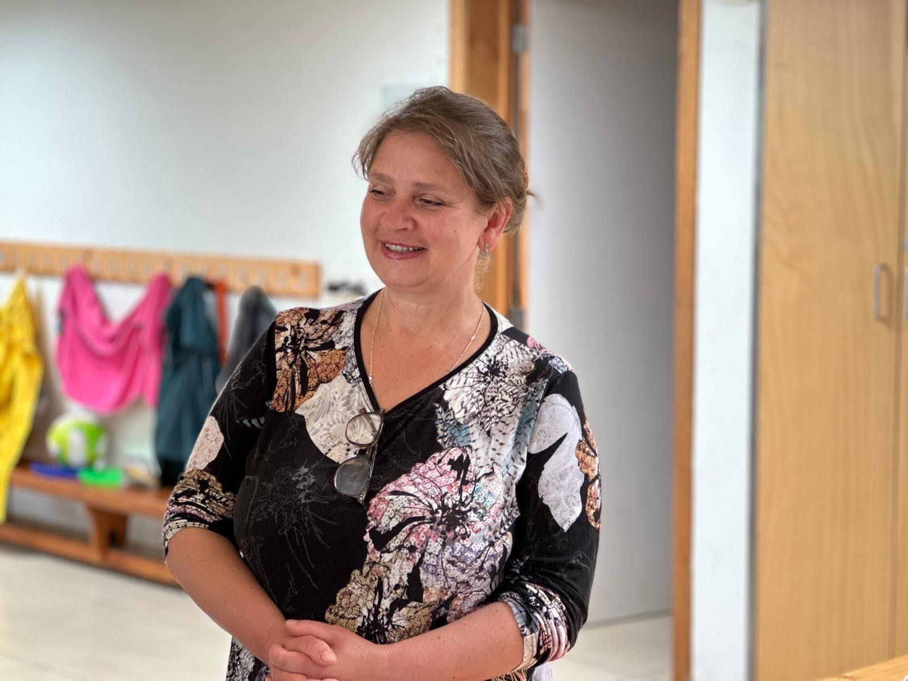
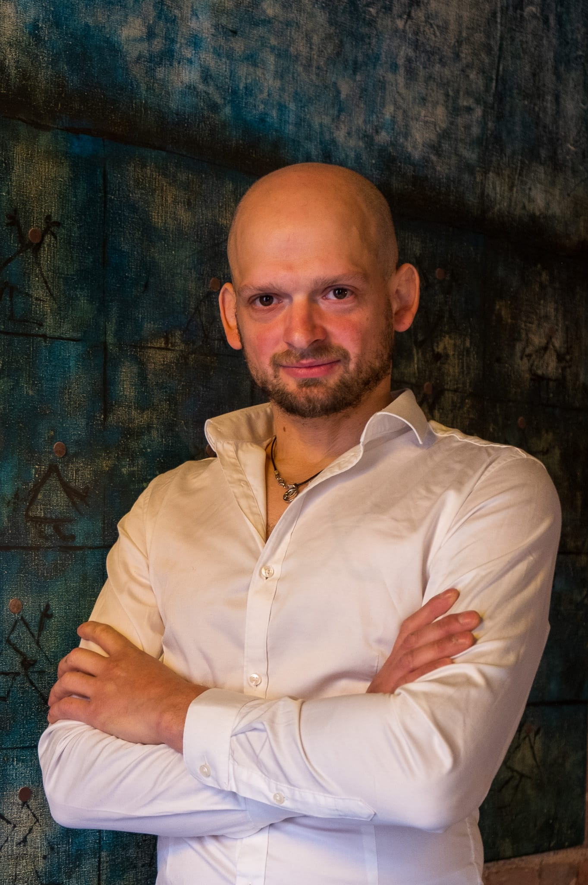
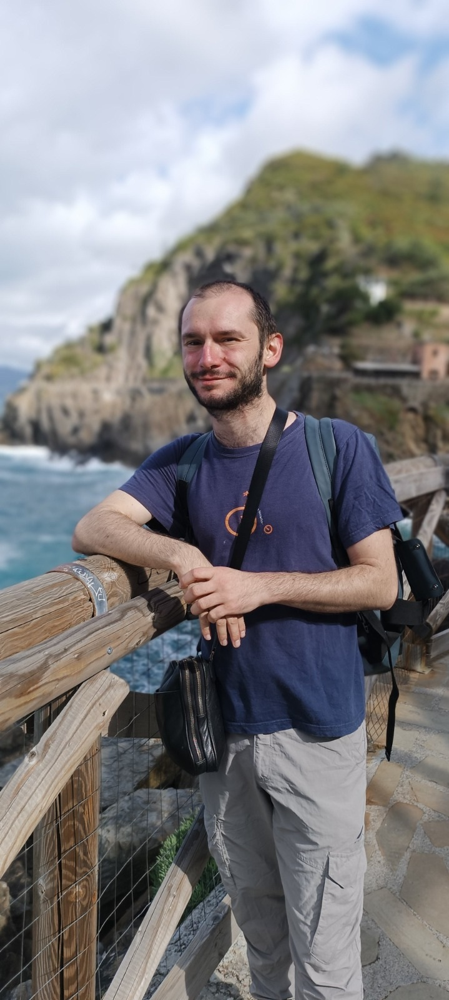
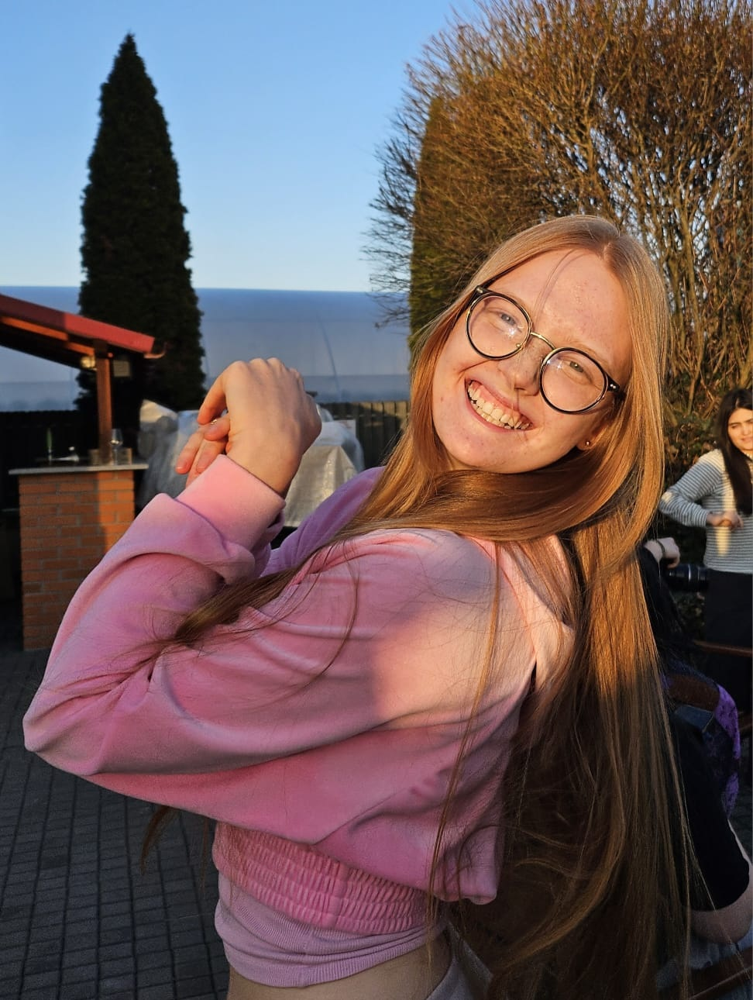
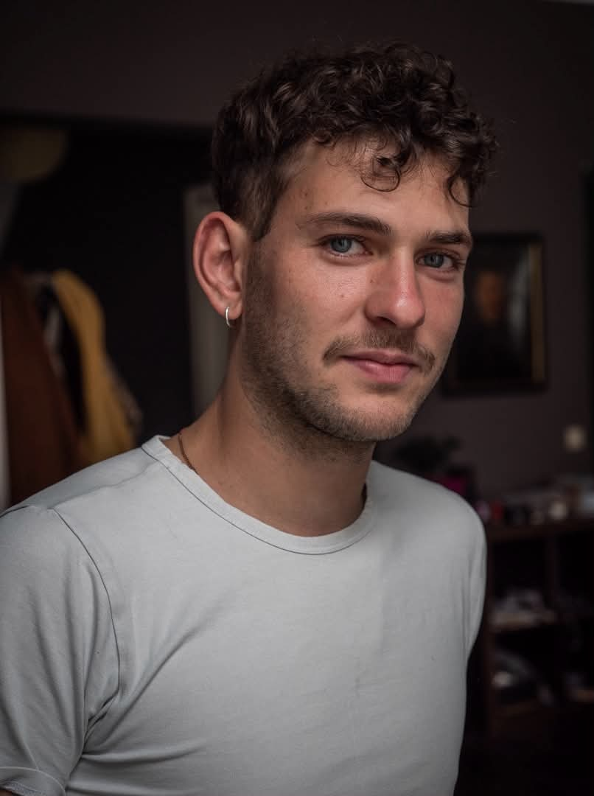
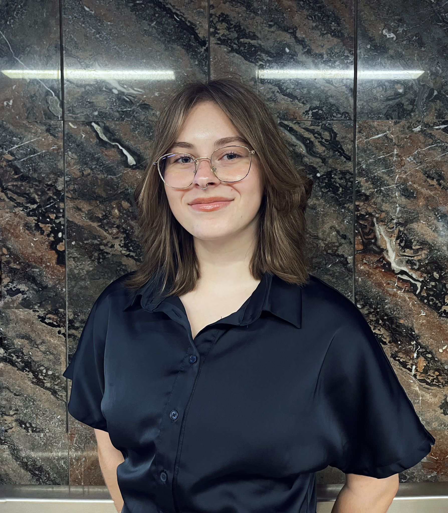

Bonjour, je m'appelle Anton ! C'est moi qui ai créé ce site.

Bonjour, je m'appelle Anton ! C'est moi qui ai créé ce site.

Bonjour, je m’appelle Mathilde ! Je suis impliquée depuis les débuts de l’ASBL Lingua Fortuna, née d’une belle amitié belgo-ukrainienne. Au fil du temps, les objectifs de l’association ont évolué, en résonance avec le contexte géopolitique ainsi qu’avec nos valeurs et nos engagements.
Au sein de l’ASBL, je fais ma part en mettant à profit mes compétences pédagogiques et d’animation, développées à travers mon métier de professeure de français et de théâtre. J’apporte un soutien à la fois éducatif et humain, avec l’envie de créer du lien, de favoriser l’expression et de renforcer la confiance de chacun.

Bonjour, je m’appelle Oksana. Après des études en traduction et plus tard en droits humains, ainsi qu’un parcours professionnel à l’international, j’ai co-fondé l’ASBL Lingua Fortuna, nourrie par des rencontres, des coopération interculturelles et l’envie de contribuer à un monde plus juste et solidaire.
Au sein de LF, je m’engage dans la création et la coordination de projets éducatifs et humains, avec une attention particulière portée au dialogue interculturel, à l’engagement citoyen et au bien‑être. J’aime créer des espaces où chacune et chacun peut apprendre, s’exprimer, prendre confiance et transformer ses idées en projets porteurs de sens.

Bonjour, je m’appelle Svitlana. Je suis co‑fondatrice de l’ASBL Lingua Fortuna et infirmière de formation. J’ai rejoint LF avec l’envie de prendre soin des autres et de contribuer, à ma manière, à des projets humains et solidaires.
Au sein de l’association, je m’occupe des aspects liés à l’accueil, au bien‑être et à l’attention portée aux participant·es lors de nos projets. Et parce que prendre soin passe aussi par le partage, ma cuisine fait partie intégrante de mon engagement, créant un véritable pont culinaire entre les traditions belges, ukrainiennes et d’ailleurs. À travers la nourriture, je partage un peu de chez moi, je crée du lien et j’aide chacune et chacun à se sentir accueilli, en sécurité et à sa place.

Bonjour, je m’appelle Gil. Je suis l’aventure Linga Fortuna depuis ses débuts et j’ai eu la chance de participer à deux de leurs projets, l’un en Belgique - Ciné Club et l’autre en tant que Youth Leader lors d’un échange Erasmus+ en Finlande. J’adhère pleinement à leur vision, fondée sur le bien-être, le partage, l’apprentissage ainsi que de nombreuses autres valeurs humaines que je partage profondément. En tant que coach de hockey et grand voyageur, j’essaie de transmettre mon expérience de vie afin de rendre leurs voyages et leurs stages encore plus enrichissants, tant sur le plan humain que personnel.

Bonjour, je m'appelle Florian. Je travaille avec Lingua Fortuna depuis début 2026 et la participation, en tant que Youth Leader, à un échange Erasmus+ en Finlande. Comédien de formation, je suis également animateur et professeur de théâtre. Je pense que, pour développer le bien-être et les échanges humains riches durant les stages, il faut, dès le départ, aider à tisser un rapport de confiance et une envie de faire collectif au sein des groupes. Nourrie de mon expérience théâtrale et pédagogique, c'est ce que je tente d'apporter.

Bonjour, je m'appelle Jane !
Je suis avant tout professeure de mathématiques, un métier qui fait partie de ma vie depuis toujours. Depuis 2025, je fais partie de l’organisation Lingua Fortuna, qui m’a ouvert les portes du monde Erasmus+ et des activités internationales pour les jeunes. Grâce à cette expérience, j’ai découvert de nouvelles façons de travailler avec la jeunesse, et aujourd’hui je suis également bénévole au sein de l’organisation.

Bonjour, je m'appelle William. Après des études de comédien au Conservatoire de Mons (Art²), je me suis lancé dans la création de différents projets autour du théâtre, mais également du cinéma. Je suis aussi enseignant en académie : la transmission est une valeur qui me touche tout particulièrement et qui guide mon parcours.
Au sein de l’ASBL Lingua Fortuna, je m’engage dans la co-création d’un atelier cinéma, avec pour objectif de favoriser l’autonomie des jeunes. Ensemble, nous écrivons, filmons, jouons et montons un court métrage, dans une dynamique collective et créative.
Je m’implique également dans les projets Erasmus+ en tant que Youth Leader, notamment lors d’échanges internationaux, comme en Finlande en 2025. Ces expériences interculturelles nourrissent ma pratique et renforcent mon envie de transmettre à travers l’art. J’essaie, à travers tout cela, de partager au mieux l’amour que j’ai pour ces médiums.

Bonjour, je m’appelle Anastasiia ! En tant qu’assistante administrative chez Lingua Fortuna, je participe à l’organisation des événements et au suivi des différentes activités de l’association. Je contribue également à la rédaction des comptes rendus et à la documentation des projets menés à bien, notamment dans le cadre d’Erasmus+.